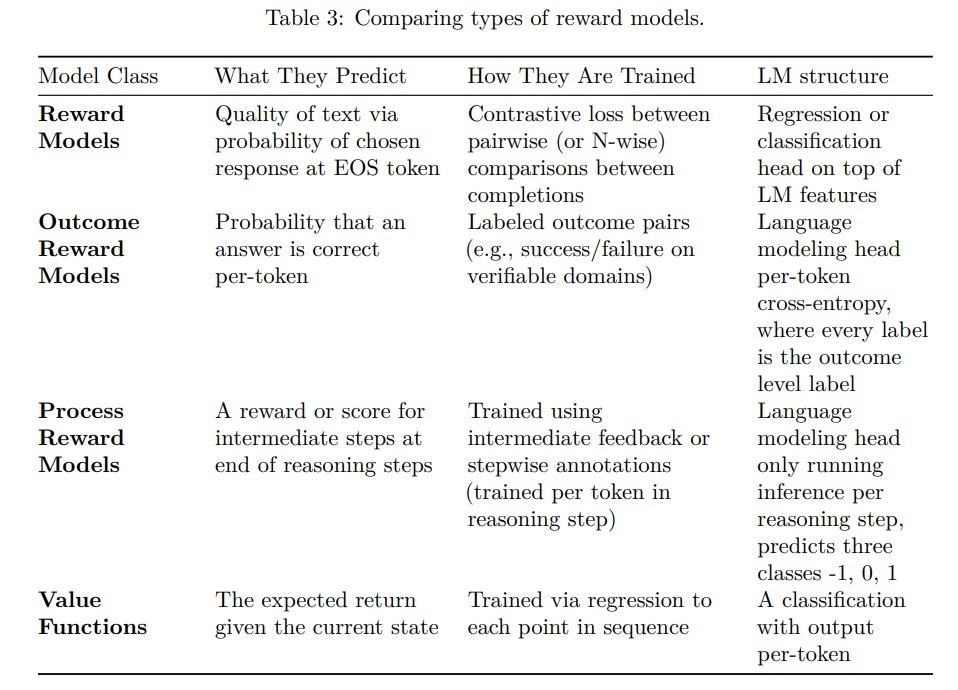

RLHF (Reinforcement Learning with Human Feedback)
Key Concept
RLHF tunes a model's responses at the response level, not at the next-token prediction level like standard language modeling.
It is used in the alignment phase, after pretraining, to make the model behave in a way that is helpful, harmless, and honest.
Core Components of RLHF
- Pretrained Model: Contains most of the model’s knowledge and capabilities. Alignment focuses on how that knowledge is used.
- Reward Model: Trained separately using human preferences (ranked outputs). Depends on the application domain.
- Reinforcement Learning Step: Fine-tuned using PPO or similar algorithms with help from the reward model.
- Contrastive Loss: Used with negative feedback to help differentiate good and bad responses.
Alignment Hypothesis
According to the Superficial Alignment Hypothesis
- Alignment is mostly about style and format, not deep reasoning.
- A small set of examples might be enough to tune a pretrained model.
- This suggests that alignment ≠ knowledge.
Milestones in RLHF & Alignment
- First ChatGPT: Trained using RLHF.
- Shift in Post-Training Methods: The DPO (Direct Preference Optimization) method emerged.
- DPO Era Models: Zephyr-Beta, Tulu 2, and others demonstrated improved alignment through direct preference learning.
DPO (Direct preference optimization): Directly learns from human preferences without using a reward model; simpler and stable.
PPO (Proximal policy optimization): A reinforcement learning algorithm commonly used in RLHF with a reward model.
Alternative Feedback Methods
- TAMER: Humans iteratively score actions, teaching the agent a reward model.
- COACH: Human feedback is used to tune the advantage function.
These two are human in loop methods for RL, usually used in Robotics/RL games and not usually in LLMs. Here a human gives active feedback according to rank or advantage shaping.
Modern Language Model Architecture
- Uses decoder-only Transformers (e.g., GPT architecture).
- Rely on self-attention mechanisms to understand and generate language.
Reward Models in Alignment
Reward models are critical components in aligning language models to human preferences by assigning scalar values that represent the quality of a model's output.
Types of Reward Models
- Outcome Reward Models (ORM):
- Assess the final output of a language model.
- Predicts the probability that a response leads to a correct or desirable outcome.
- Best suited for tasks with clear, single-answer objectives.
- Process Reward Models (PRM):
- Evaluate the intermediate reasoning steps taken by a model.
- Assigns a reward score to each step in the reasoning process.
- Helpful for tasks requiring complex, multi-step reasoning or transparency.

Optimization Techniques for Alignment
- Reward Modeling:
- A model is trained using human-labeled preferences.
- Outputs a scalar reward signal for future generations based on quality.
- Used in RLHF setups for guiding policy improvement.
- Instruction Fine-tuning:
- Supervised fine-tuning of language models using curated question-answer pairs.
- Teaches the model the format and style of human-aligned responses.
- Acts as the first stage before reinforcement-based fine-tuning.
- Rejection Sampling:
- A filtering method used to discard poor outputs.
- Only keeps samples that align with human preferences or meet reward thresholds.
- Simple and effective for low-latency deployment or training efficiency.
- Policy Gradients:
- Updates model parameters using the reward model’s signal.
- Part of standard reinforcement learning (e.g., PPO).
- Trains the model to prefer high-reward outputs by maximizing expected reward.
- Direct Alignment Algorithms:
- Optimize model behavior directly from human preferences, bypassing a reward model.
- Example: Direct Preference Optimization (DPO).
- Reduces complexity and instability from intermediate reward estimation.
Conclusion: These techniques are fundamental in ensuring that large language models not only generate fluent text but also behave in ways aligned with human values and expectations.
The diagram above shows the following:
First, A base model is trained with human + synthetic instructions ie. the initial IFT (Instruction fine tuning), creating an SFT model ie Supervised fine tuned model
Second, A reward model or an LLM judge is used (made with human preferences), along with the help of PPO or DPO or other multiple optimization techniques to calculate loss, which is send back to retrain the SFT model.
Finally, we retrain the SFT model, creating a new aligned model after some n iterations.
PPO (Proximal Policy Optimization) - Reinforcement Learning Notes
PPO (Proximal Policy Optimization) Algorithm
Core Components
| Component |
Role |
| Policy Network |
Takes a state as input and outputs a probability distribution over actions. |
| Value Function Network (Critic) |
Takes a state (or state-action pair) and estimates the Q-value (expected return). |
Training Loop (Simplified)
Pass 1 (One batch of trajectories):
- Use Policy Network to generate actions from current states.
- Use Value Function Network to estimate Q-values for these actions.
- Compute Advantage = Actual Return − Estimated Value
- Actual Return = Sum of discounted future rewards
- Compute losses and backpropagate:
- Value Network → MSE loss from advantage
- Policy Network → Clipped surrogate objective loss
Pass 2 and Onward:
- For each new batch:
- Recalculate MSE loss for value network
- Recalculate clipped objective loss for policy network
- Update both networks
- Repeat for several epochs
Policy Network Loss (Clipped Objective)
- Store:
- Old probabilities from previous policy
- Actions and corresponding states
- Compute:
ratio = new_prob / old_probfin1 = ratio × advantagefin2 = clip(ratio, 1 - ε, 1 + ε) × advantageloss = -min(fin1, fin2) (negative for gradient ascent)
- Use this loss to update the policy network parameters.

Value Network Loss (Critic Loss)
- Use Mean Squared Error (MSE) between predicted value and actual return.
- Update value function network with this loss.
Conclusion: PPO efficiently balances stability and performance by constraining policy updates and optimizing both the actor and critic networks iteratively.
RLHF & PPO - Clarification Points
üö® Key Points You Got Confused About (Clarified)
- ❌ Confusion: PPO trains the reward model.
- ✅ Correction: PPO does not train the reward model. It trains the policy network using signals from a pretrained reward model.
- ❌ Confusion: PPO targets the value network of the base model.
- ✅ Correction: PPO uses a value network (critic) that may be a separate head or module, not the base model's own components.
- ❌ Confusion: Reward model and value network are the same.
- ✅ Correction: The reward model is trained with human feedback to score outputs. The value network is part of PPO's RL framework and estimates expected returns for actions/states.
- ❌ Confusion: PPO works on token-level predictions like standard LM training.
- ✅ Correction: PPO operates at the response-level, optimizing complete outputs using reward feedback — not token-by-token.
- ❌ Confusion: PPO is a one-step or static optimization.
- ✅ Correction: PPO is a multi-step iterative process, involving repeated sampling, advantage calculation, and gradient updates to both policy and value networks.
DPO (Direct Preference Optimization)
What is DPO?
DPO is a post-training alignment method that eliminates the need for a separate reward model by training a language model to directly increase the probability of preferred outputs.
Key Steps
- Pretrain a base LLM (Large Language Model).
- Generate pairs of outputs from the LLM and collect human feedback (as rankings or preferences).
- Train the model to assign:
- High probability to preferred (positive) completions.
- Low probability to less preferred (negative) completions.
Overall, our goal is the 1) Get rid of the reward model and 2) Avoid the model from updating too much.

Replacement for Reward Model: Bradley-Terry Model
Although DPO aims to avoid using a traditional reward model, it does so by modeling the probability of preference using the Bradley-Terry (BT) model.
The BT model uses the sigmoid function to convert the log-likelihood difference between two outputs into a probability value between 0 and 1:
P(prefer A over B) = sigmoid(πₐ - π_b)
Here, πₐ and π_b are log-likelihoods (or pseudo-reward scores) of the two completions.
Preventing Over-Updating: KL Divergence Regularization
To ensure the model doesn’t drift too far from the original pretrained distribution, DPO adds a KL divergence penalty. This ensures stability and preserves base model knowledge.
Loss = -log( sigmoid(πₐ - π_b) ) + {β * KL(π_new || π_old)}
Explanation:
KL(π_new || π_old): Penalizes the new model for deviating too much from the original (preference-unaware) model.β: A hyperparameter controlling how strong the penalty is.
This allows the model to learn human-aligned preferences without needing a separate reward model, yet keeping it close to its pretrained distribution.
GRPO and PPO Notes
GRPO vs PPO: Key Concepts
1. What is GRPO?
GRPO (Gradient-Regularized Policy Optimization) is designed to:
- Improve computational efficiency through mathematical reasoning.
- Optimize memory usage by eliminating the need for a value model.
- Sample multiple outputs per prompt and average their rewards to guide updates.
Steps in GRPO
- Sample
n completions from current policy for each prompt.
- Evaluate each with a reward model → get
r₁, r₂, ..., rₙ.
- Compute average reward:
R̄ = (1/n) × ∑ rᵢ
- Use policy gradient method to maximize expected reward while regularizing against a reference model.
2. Differences from PPO
- PPO uses a value model for reward estimation.
- GRPO eliminates the value model and uses averaged sampled rewards instead.
3. Techniques Used
- Regularization: Prevents over-optimization by penalizing large deviations from a reference policy.
- Instruction Fine-tuning: Trains models to follow instructions better.
- Rejection Sampling: Selects high-quality responses by discarding poor ones.
- Policy Gradient Algorithms: Core reinforcement learning method to update the policy.
4. Regularization using KL-Divergence
KL regularization ensures the updated policy doesn’t diverge too much from the reference. The KL divergence is calculated as:
KL(P || Q) = ∑ P(x) log [ P(x) / Q(x) ]
Where:
P(x) = new policyQ(x) = reference policy (e.g., initial supervised model)
Understanding Instruction Finetuning (IFT)
What is Instruction Finetuning (IFT)?
Imagine you have a super smart student who knows a lot of general stuff, but they're not very good at following specific instructions yet. Instruction Finetuning is like giving that student a special training course where they learn to understand and follow instructions perfectly.
In the world of AI, IFT teaches a large language model (LLM) to be really good at understanding your "instructions" or "prompts" and giving you the kind of response you expect. It uses a specific way of organizing the information we give to the AI, like a script for a play.
How Does IFT Work? (Chat Templates and Roles)
Think of it like a conversation with different people involved. In IFT, every piece of information we give to the AI is assigned a "role." There are three main roles:
-
System: This is like setting the overall mood or rules for the AI. It's the prompt that tells the AI how to behave or what kind of personality it should have. It's often hidden from the user, but it's super important for guiding the AI's behavior.
Example: "You are a helpful and friendly assistant. Always provide concise answers."
-
User: This is YOU! It's any message or question you send to the AI. This is where you give your instructions or ask for information.
Example: "Can you explain photosynthesis to me in simple terms?"
-
Assistant: This is the AI's response back to you. It holds what the AI says or generates based on your instructions and the system's guidance.
Example: "Sure! Photosynthesis is how plants make their own food using sunlight, water, and carbon dioxide."
These roles create a structured "chat template" where the AI learns how different parts of a conversation fit together. It's like teaching a child the difference between who asks a question, who gives an answer, and what the general rules of polite conversation are.
Why is IFT Important? (Key Principles)
There are a couple of big ideas that make IFT so powerful:
-
High-Quality Data is King: Imagine trying to teach someone to cook with bad recipes. They'll never learn! The same goes for AI. The better and more accurate the examples (the "data" in our notes) we give the AI during IFT, the better it will perform. If we show it lots of good instructions and good answers, it learns to give good answers itself.
-
Lots of Practice Makes Perfect (~1 Million Prompts!): It takes a lot of practice for an AI to become truly amazing. We're talking about feeding it around 1 million (that's 1,000,000!) different instructions or prompts during the IFT process. This massive amount of training helps the model become super capable, especially for something called RLHF (Reinforcement Learning from Human Feedback), which is another advanced training technique that makes AI even better at being helpful and harmless.
So, in simple terms, Instruction Finetuning is like a specialized training program that teaches AI models to understand and follow instructions by breaking down conversations into specific roles and practicing with a huge amount of high-quality examples. This is a big reason why today's AI can understand your questions and respond so intelligently!
Advanced AI Finetuning Techniques - A Noob's Guide
Rejection Sampling (RS)
Imagine you're trying to pick the best apples from a huge orchard. You can't check every single one. Rejection Sampling is a clever way to find the "best" responses from an AI model without checking every single possible answer it could generate. It's a common and simple technique used to make AI models better at giving preferred answers.
How it Works:
- The AI model generates many different answers (let's call them "completions") for the same question or instruction.
- A special "reward model" (another AI model trained to judge quality) evaluates each of these generated answers and gives them a "score" or "reward."
- We then pick only the best-scoring answers to use for further training. This is like only keeping the juiciest, crunchiest apples you found.
- Finally, we take these "top" answers and use them to finetune (further train) the original AI model, teaching it to generate more of these high-quality responses in the future.
Many research papers use Rejection Sampling as a starting point or a comparison (a "baseline") because it's a straightforward way to improve an AI model's output based on quality.
Different Ways to "Pick the Best" in Rejection Sampling:
When we say "top completions," there are a few ways to decide what "top" means:
1) Selecting Top-N Completions
- This is like saying, "Give me the best N (e.g., top 10, top 100) answers from all the answers generated for all questions combined."
- You collect all the possible answers the AI generated for a bunch of different questions, give them all a score with your reward model, and then just take the absolute top N answers overall, regardless of which specific question they came from.
- This method prioritizes overall highest quality across the entire dataset.
2) Top Per Prompt
3) Top Overall Prompts (less common in simple RS, but related to data selection)
- This isn't about picking top *completions* as much as it is about identifying the *prompts* that lead to the most valuable responses.
- Sometimes, you might have certain questions or types of questions that are more important or lead to more interesting/complex answers.
- You might use the reward model to evaluate all answers generated for a given prompt, and then decide to prioritize training on prompts that consistently generated high-quality answers, or perhaps prompts where the model struggled but then produced a good answer after several tries.
- This is more about curating the input side of the data.
Policy Gradient Algorithms
Alright, let's switch gears to another core concept in making AI smart: Policy Gradient algorithms. Imagine you're teaching a robot to walk. You don't tell it exactly where to place each foot (that's too much detail!). Instead, you set up a system where it tries different ways of walking, and if it moves forward and doesn't fall, it gets a "reward." Policy Gradient algorithms work similarly: they teach an AI agent to learn the best "strategy" or "policy" to maximize its rewards over time.
What is a "Policy" in AI?
In Reinforcement Learning (RL), the "policy" is the AI agent's strategy. It's like a brain that tells the agent what action to take in any given situation (or "state"). For example, in a game, the policy might tell the AI: "If the enemy is here, move left."
Policy Gradient methods directly optimize this policy. Instead of trying to figure out the "value" of every single action in every single situation (which can be impossible in complex scenarios), they adjust the policy itself to make it more likely to choose actions that lead to higher rewards.
The Core Idea: Learning by "Trial and Error" with a Compass
- Trial: The AI agent tries out actions based on its current policy in an environment (e.g., the robot tries a step).
- Error (or Success!): It receives a reward based on whether those actions were good or bad (e.g., positive reward for moving forward, negative for falling).
- Compass (Gradient): Policy Gradient algorithms calculate a "gradient." Think of this as a compass that points in the direction of "more rewards."
- Adjustment: The AI adjusts its policy slightly in the direction the compass points. This makes it more likely to repeat actions that led to good rewards and less likely to repeat actions that led to bad ones. This adjustment is called gradient ascent, because we're trying to increase (ascend) the total reward.
Why are Policy Gradients Important?
- Direct Policy Optimization: Unlike other methods that try to estimate the value of actions first, Policy Gradients directly improve the action-choosing strategy. This is useful for complex problems where figuring out exact "values" is too hard.
- Handles Continuous Actions: Imagine controlling a robot arm where you can set the joint angle to any value (not just "bend" or "straighten"). Policy Gradients can handle these "continuous" actions much better than methods that need to list every single possible action.
- Stochastic Policies: Policy Gradient methods can learn "stochastic" policies, meaning they output probabilities for actions. This allows the AI to explore different actions even if they aren't immediately the "best" choice, which helps it find better long-term solutions and avoid getting stuck in a "local optimum" (a good but not perfect solution).
- Foundation for RLHF: Policy Gradients are a fundamental building block for advanced techniques like Reinforcement Learning from Human Feedback (RLHF), which is used to align powerful language models (like the one you're interacting with) with human preferences and safety guidelines.
Key Algorithms (Examples):
- REINFORCE: A foundational policy gradient algorithm that uses complete sequences of actions and rewards (called "trajectories" or "episodes") to calculate the gradient. It's like reviewing an entire game to see what moves led to winning.
- Actor-Critic Methods: These are more advanced and combine two parts: an "Actor" (the policy that decides what actions to take) and a "Critic" (which evaluates how good those actions were, helping to guide the Actor's learning more efficiently).
- Proximal Policy Optimization (PPO): A very popular and robust policy gradient algorithm known for its stability and good performance. It's often used in large-scale AI training.
In short, Policy Gradient algorithms are a powerful family of methods that directly teach AI agents to learn optimal strategies by trying things out, getting feedback (rewards), and adjusting their behavior towards higher rewards, making them excellent for a wide range of complex tasks from robotics to playing games and generating human-like text.
Direct Alignment Algorithms and RLVR in RLHF
When we talk about making AI models, especially large language models (LLMs), helpful and aligned with what humans want, we often refer to **Reinforcement Learning from Human Feedback (RLHF)**. Traditionally, RLHF involves a few key steps:
- You start with a powerful language model that can generate text.
- You collect data where humans rank or compare different outputs from the model.
- You train a separate AI model, called a **"reward model,"** to learn these human preferences. This reward model then gives scores to new responses.
- Finally, you use a Reinforcement Learning (RL) algorithm (like PPO, which we discussed earlier) to finetune the original language model, teaching it to generate text that gets high scores from the reward model.
Now, let's explore some newer ways to achieve this alignment that simplify or change this traditional pipeline.
---
Direct Alignment Algorithms
Direct Alignment Algorithms are a more streamlined approach to RLHF. Their goal is to update an AI model to achieve the same alignment objective as traditional RLHF, but **without ever having to train an intermediate reward model or use complex RL optimizers.**
Why are they "Direct"?
- They **don't train a separate reward model**: Instead of training a dedicated AI to score responses, these algorithms directly use human preference data (e.g., "this response is better than that one") to update the main language model.
- They **don't rely on complex RL optimizers**: Traditional RL algorithms like PPO can be quite challenging to implement and tune. Direct alignment methods often convert the preference learning problem into a simpler optimization task that can be solved with more standard neural network training techniques (like those used in supervised learning).
Example: DPO (Direct Preference Optimization)
DPO is a leading and very popular example of a direct alignment algorithm. Here's a simplified idea of how it works:
- You need a dataset of **"preferred" and "rejected" response pairs**. This data is typically created by showing humans different outputs from an AI model for the same prompt and asking them to choose which one they prefer.
- DPO then trains the language model to **increase the probability of generating the "preferred" response** and **decrease the probability of generating the "rejected" response** for any given prompt.
- The clever part is that DPO rephrases the entire RLHF objective (maximizing a reward based on preferences) into a simple, single-stage loss function that can be optimized using basic gradient descent, much like how you'd train a model for classification. This avoids the separate reward model and the complexities of RL.
DPO in Action (Simplified):
- Prompt: "Write a short poem about stars."
- Preferred Response ($Y_W$ - "Winner"): "Twinkling diamonds, shy and bright, / Jewels scattered through the night."
- Rejected Response ($Y_L$ - "Loser"): "Stars are really hot. They are far away."
DPO adjusts the model's parameters so that, given the prompt, it's more likely to produce the poem and less likely to produce the factual but unpoetic sentence.
Advantages of Direct Alignment Algorithms:
- Simplicity: They're generally easier to implement and train than the multi-stage RLHF pipeline.
- Stability: Often more stable during training because they avoid some of the complexities and hyperparameters of RL.
- Efficiency: Can be more computationally efficient since you don't need to train and maintain a separate reward model.
- Strong Performance: Despite their simplicity, DPO and similar methods often achieve comparable or even better performance than traditional RLHF on various alignment tasks.
---
RLVR: Reinforcement Learning with Verifiable Rewards
While Direct Alignment Algorithms aim for simplicity in the RLHF pipeline, **RLVR (Reinforcement Learning with Verifiable Rewards)** takes a different approach to the **"reward"** part of RLHF. Traditional RLHF relies on **subjective human preferences** to train a reward model. This can be costly, slow, and sometimes inconsistent due to human bias or disagreement.
RLVR offers an alternative: instead of relying on human preferences and training a subjective reward model, it uses **objective, verifiable feedback** for its rewards. This means the feedback is either definitively "correct" or "wrong," based on external tools or predefined rules, not human opinion.
How it Works:
In RLVR, the reward signal for the AI model comes from automatic, external sources:
- Verifiers: These are specialized tools or programs that can check the correctness of an AI's output automatically.
- Example 1 (Math): If an LLM is asked to solve a math problem (e.g., "$2 + 2 = ?$"), a **mathematical solver** can verify if the generated answer ("4") is indeed correct. The AI gets a positive reward for "4" and a zero/negative reward for "5".
- Example 2 (Code): If an LLM generates code, a **compiler or test suite** can verify if the code compiles and runs successfully, or if it passes specific test cases.
- Rule-Based Tools: Pre-defined, unambiguous rules that determine if an output meets certain criteria.
- Example: "Does the generated response contain specific keywords?"
- Example: "Is the generated text within a certain character limit?"
This "correct" or "wrong" feedback (often a simple binary 1 or 0) is then used as the reward signal for a standard reinforcement learning algorithm to train the language model.
Key Differences and Advantages of RLVR:
- Objective Rewards: The rewards are based on facts or rules, making them highly consistent and reliable, unlike subjective human judgments.
- Scalability: Automating the reward generation process makes training much faster and cheaper, reducing the need for extensive human annotation.
- Specificity: RLVR excels in tasks where correctness can be precisely defined and automatically checked, such as scientific reasoning, coding, or logical problem-solving.
- Reduced Human Bias: By removing direct human judgment from the reward signal, RLVR can potentially reduce certain biases that might be present in human-preferred datasets.
When is RLVR Most Useful?
RLVR is particularly powerful for tasks where there's a clear, objective right or wrong answer. For example, if you want your LLM to be excellent at coding, solving equations, or generating factually accurate data that can be programmatically verified, RLVR is a strong candidate. However, for tasks that require creativity, nuance, or subjective style (like writing a compelling story or having a friendly conversation), human feedback is still essential, and traditional RLHF or direct alignment algorithms might be more suitable.
Both direct alignment algorithms and RLVR are pushing the boundaries of how we train and align AI models, each offering unique benefits for different alignment challenges.